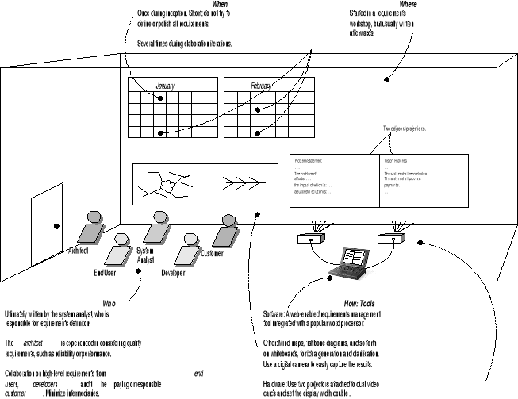

I call them "Qualities" or even "Ilities". They are properties of the
software. For example: how fast it runs, How much disk space it uses,
how often it breaks down, how difficult is it to change it, how much
do people value it, how secure is it, ....
Qualities are nearly always measurements rather than Yes/No properties.
They are also holistic -- you can not confine "security" to a special
object. It comes from the careful design of all the objects
in the system.
This quality requirement does need refining. So let me refine it a little bit:
- Take a random user from the target pool and train them in using the
product,
- Set them a task using the project in the usability lab,
- Videotape them,
- Two independent reviews count the number of times the user makes a
mistake.
Or.... simpler.
- Software is instrumented for testing purposes to count the number of times
a user clicks the "undo" button.
Exercise: work at another more detailed procedure for measuring the number
of mistakes a user makes...
Also, are all the diagrams in "Use-Case Model" (front cover of book) a
necessary part of a Use-Case Model?
Yes -- if you need them. The Systems Sequence Diagram is not used
by all methodologists. And I'd happily omit a complete use case diagram:-)
Think of all the artifacts -- documents -- as optional, useful
at the time, and evolving as you go. Not tablets cast in stone.
The book states, " user-goal level use cases will be one-to-one with user
goals". Does this mean that each use case covers only one user goal?
Yes, and vice versa, each high-level user goal should have precisely one use
case.
And each use case you satisfy precisely one user goal.
What is the difference between a Context Diagram and an Activity diagram?
A Context diagram shows the System Under Design in the center and the
things it interacts with around the outside.
An activity diagram has a mess of boxes, all connected together by control
flows, with no center, and no indication of connections with other
systems or things.
Activity diagrams show, in detail, what can happen inside the central
system in a Context diagram.
Are black box use cases the most recommended only because of their simplicity?
No. They are recommended because users don't want to know about the internal
details of a piece of software. They want to use it. So a use case
documents how to use the software and not how the software achieves that
effect.
Is that necessary to create use case diagrams?why we have to create it? Is this diagram for our custom or just for reference stuff? And How do I organize effective information include use cases, scenarios, sequences, fully dressed use cases and put them together?
A Use case diagram shows what a piece of software can do.
It makes a good poster in a room where a team works. They can be used to
rapidly sketch out the scope of a piece of software. They make an excellent
presentation Audio-visual aid (power point slide) for users, managers,
and other stakeholders.
Organization: put them on a web site.
When you discover the need for a supporting system to be created before
your main system can be fully utilized, what is the best way to incorporate
that into your project schedule?
Most projects need some infrastructure -- work on it mainly in
inception and a bit at the start of each iteration during elaboration,
possibly later.
If you discover the need for unexpected software to support the software under
development then you have a big problem. It indicate week systems analysis and design.
All bets are off. The whole project needs rethinking.
Can you compare and contrast system use case and business use case?
Business case says why the system should be done.
Use case says what the system does for its users.
A stereotype restricts the meaning of an icon in the UML. In the
UML a rectangular box represents a "classifier" -- something that describes a
class of objects. The stereotype "<<actor>>" means that the box describes
an active object that is outside the system under design.
I am glad that sometimes use cases do not REALLY fit. Nonetheless, as
important as training is required in an organization and as a part of any
system design and implementation, is training per se considered just a
feature? And, if it not, can it be included in the AD phases?
I don't think that training is thought of as part of software analysis
and design -- it is not covered in the UP. However it is important in real projects.
See CSCI372. It is part
of the deployment discipline in the RUP
[ File:RUP_disciplines_greyscale_20060121.svg ]
and tends to start
up at the end of elaboration and continue through construction
and die down during transition.
Training can only take place when you have got a stable and fairly
complete piece of software running hence the delay until elaboration is
pretty complete. Prior to that you should be showing the software to
your users, but not as training, but in requirements workshops to determine
how the software should look, fell, and work.
First be careful that the use cases are actually the same thing. For
example it is tempting to combine Cash In and Cash out into
Process Sale use case? They look just like they are just different steps of paying.
This is the kind of question you have to ask stakeholders when working in a
new Domain/Business/Enterprise -- "what do you mean 'Cash in'?"
I think the answer would be: At regular intervals and when the
cashier goes off duty the cashier must hand over the big bills from their
tills and ..... Or perhaps this is what the enterprise calls "Cash out"?
What ever -- they are independent of processing sales.
How ever when you do have a use case that seems to include another one then there
is a notation in the UML Use Case diagram that indicates this. We won't be using it.
Yes. But some people may get confused.
Yes. I guess so. More precisely -- it is damaging
to make a single use case diagram the only work
done on requirements. I see the diagram as a tool for
presenting requirements to stake holders. They make excellent
Power Point slides.... It forms a visual summary of the details. It is in the
details that the real work is done.
I agree with the book -- I've seen a lot of projects that wasted time
drawing
complicated use case diagrams when a few simple written use cases would
have
been time well spent. Sadly several software engineering texts actively
encourage diagrams and don't even mention the writing...
Fact: in games and IT,
writing is were design happens.
In scientific work the design tends to be done using mathematics.
So put your effort into writing scenarios etc rather than a use case diagram.
A test for good use cases.... would their boss be happy if the user did this
use case all day?
What exactly are use case realizations and how do they work with a use
case?
A realization describes, in detail, how the software handles a use case.
It will say precisely what objects are involved and how they
interact to give the user what they need.
What if 80-90% of the use cases aren't done by the time the construction
phase comes around? Should the project go ahead and start coding what is
available, or should the project stay in the elaboration phase a little
longer?
If you haven't got any running code by then you ain't doing
it right. We expect some running and critical code by the end
of the first iteration in elaboration (in a real project ...
in cs375 code is optional).
I don't understand what the figure is trying to show me versus the text on pg 95.

It is a diagram of a room where a requirements workshop is held. It shows
the people who should attend. It shows the ideal equipment you should
have. And on the calendars it shows you when such a workshop
should take place: in inception, and several times in elaboration.
Under the first calendar is a brain-map and a fish-bone diagram. On the right
of these are two projected screens for displaying artifacts -- in this case use cases.
What seems to be the biggest mistake students make when making use cases?
I'm not sure. (1) wasting time on completely defining a single step in a scenario
as if it was a use case. All use cases should help the user get a tangible result.
(2) Possibly starting to describe the technical details
of the user interface. (3) Describing the internal design of the software.
In a small business model, can vision be considered as a well described use
case? If not, How can be differentiate?
No. Use cases are detailed and visions broad-brush. One vision
has many use cases.
Follow the book's advice -- it is just an unsorted list
of things that the system will/shall do.
Feature lists were popular before people learned about use cases.
Some enterprises may still use them -- we won't!
Does the supplementary specifications have to be visible to the end user since it has licensing information?
All requirements documents must be shared with stakeholders -- including
some end users ... exception mass marketed software, where it is hard to
get end users for a new product before releasing it.
Under supplementary specification, I noticed the author goes into very specific details in documenting project requirements. However, a contingency plans is never mentioned in the inception phase. Should a contingency plan or disaster recovery be discussed during this phase? Or, will it be best to wait until the construction phase?
Contingency planning should start before software analysis and design
and should be a part of developing software at all phases.
Disaster recovery planning is part of Systems Analysis and Design
(CS372).
To a
large extent, most contingencies should be discovered about during
inception and classified as one of these: "out of scope", "Alternative scenario",
"use case extension", "special use case", "critical use case", etc.
I don't think they should be part of a supplementary specification how ever.
For example most real projects will need a "Back up" use case
and a "Recover" use case, both with some thing like "Administrator"
as the primary actor. Oddly, designing for these use cases is
very similar to designing any other data intensive use case.
There seems to be quite a bit of overlap in the vision and the
requirements, as in user level goal.
A
Vision Statement
is a short statement of what we expect the project to achieve. It
is inspirational. It is an "Executive summary". But it leads
to many goals and requirements. These are only implicit
in the vision, they are discovered in "Requirements Analysis"
Example: the vision may talk of "reliable 24/7" services. Requirements
analysis uncovers a dozen use cases involving monitoring, back up,
restoration, roll backs, disaster recovery, etc. To say nothing
of a ton of systems design... like the UPS, the multiple servers,
no single point of failure, ...
Yes.... but it is also wrong. Only when the project is over do
you discover where you ended up. The vision points the direction,
the journey defines where you end up.
Is it common for the vision to change as the use cases and supplementary specifications are being written?
I can't give you any statistics about real projects. I'm sure it does happen.
It has never happened with my own projects, as far as I can recall.
In the student projects I have supervised in the last 37 years
I have seen three projects completely implode and need rethinking while
we were working on the specifications. In both cases the whole
basis of the work was an assumption that proved false.
A well written vision should be a high level picture that can survive
discoveries made when writing use cases and other specifications.
The book says that these secondary requirements aren't central to learning
OOA/D, so how is it decided when they should be applied to your case
studies?
Larman and this course will return to this topic later.
Can you give us an example of what we would consider special requirements?
Try this that arrived by EMail last week: "To establish A.D.A. compliance
all syllabuses will follow this .doc file template..."
Or this: "The pace maker must defibrillate the heart within 1 second of
fibrillation occurring".
Or: "This is a throw-away prototype -- non-portable, incomplete,
and unmaintainable".
In the NextGen Example of a partial Supplementary Specification, is the
Supplementary Specification a part of the Use Case or is it completely
separate? I am assuming it is a separate document and if so where would it
be included with the other documents?
The Supplementary Specification is not part of a particular use case
but a separate artifact -- a document/web page/file. Probably placed
after the use cases.
There is a commentary on page 111 that says "Please go read the 7-page
Vision at the project website" isn't the vision supposed to be a short
description of the project and not a 7 page report?
A 7-page vision is for a big project! The book is using a industrial
scale project and for these the vision statement can get a lot
larger than the ones we are going to need in our 10 week projects.
What would be useful additions to the Vision statement of a UP project?
The goal of Vision statements are
- vision_goals::=
- Enable executives learn about the project fast.
- Define a common purpose for the development team.
- Set boundaries on the scope of the project.
- Enable new people learn about the project fast.
But if you are tempted to add some item apply this test:
- What is the value of this information?
If the item helps one of the vision_goals above, then it may belong.
Otherwise make into a use case or add to the supplementary specifications.
The books shows things like this
- The business case: why develop the system. The Bottom Line. Half a
page!
- The Context of the work
- Stakeholders
- Market
- Current systems: rival, old, connected to,...
- Goals: stakeholder and user
- Product overview
- A context diagram defining the boundaries
- Benefits
- Assumptions and risks
- Costs and Pricing
- ...
- Features
My instinct is to ask what can be omitted! KISS.
One very successful executive said he would read anything, as long
as it fitted on a postcard..... and this would be my ideal "vision
statement"
It seems as though the use case and the vision go hand in hand, does the
vision summarize the entire project detail for detail? If so then shouldn't
that be in the use case?
Vision
statements should go for the big picture and avoid the details of
how the vision is achieved in my opinion.
I agree that uses cases and the vision go hand-in-hand.
The book states that "it isn't useful to be rigid about the order", but
doesn't a use case first require a vision to create a use case?
I agree that in theory the Vision should come first, but in practice
you might need to sketch a use case to get an idea of the
scope of the system.
Indeed they probably develop together in a real project.
Chapter 7 contains lot of requirement artifacts that can be key in adding
clarity to use cases. Since there are so many of these artifacts, is there
a particular way to organize all of these artifacts together or produce a
sort of "design document" out of them?
Good question -- I've spent 20 or 30 years working on it.
The current best practice is to organize requirements about user goals when
ever possible.
The other practice is to use computerized (and backed up) files or data base.
I think that a project web site complete with blog, wiki, and forum is a good idea.
Larman uses 4 or 5 documents, The supplementary specs have headings from
the FURPS+ classification. I've tried PQRST in a prototype
IDE but it didn't work as well as many small documents and a good search
engine
or two. I know other famous people who put each requirement
on a 3><5 card and use a rubber band to keep the pack together. The
IEEE standard SRS provides another way to organize requirements
[ http://www.csci.csusb.edu/dick/SRS/ ]
and the literature of software engineering has lots of
designs for "repositories"...
I don't think we have found the perfect one-size-fits-all structure yet,
so I go for flexibility and a little bit of automation and content
control.
Personally, in projects at this university,
I'm leaning towards a simple web site with a project
blog as index, a search engine, and a lot of simple HTML, GIF, JPEG, PDF,
and TXT files. Perhaps add an upload page that records some
metadata as part of the update?
One thing I plan to explore, is integrating the tools and languages I developed in the
last 20 years into Eclipse... And see what structure evolves.
The Vision is a high-level fuzzy document: In the vision you
might find: the system shall be reliable.
The supplementary specs will be worked out in details
- The mean time to failure under
normal load will be 10 weeks
- The maximum time to recover from a failure will be
less than 6 hours 90% of the time`.
- ... Etc.
Or: Vision: fast. Spec: reacts to user input in less than 0.1s under normal load, 95% of the time. Etc.
Or -- Vision: user friendly. Spec: a randomly chosen administrativve assistant
will prefer
to use our product over MS Word 60% of the time". Etc.
How short can a vision be? Can it be at least a half a page?
Yes. As long as it covers the subject -- defines the direction and
scope of the project. Where are we going and what will be involved
in the journey.
Other than the vision and the executive summary are there any other
documents that would be useful to help introduce a new person to the
project?
I like Domain (or Business) models, but they are an acquired taste!
Most people like some kind of context diagram: DFD or use case.
I'm tempted to add that a really good video can help. For a sample
go to
[ http://csci.csusb.edu/dick/cs690/ ]
and select some of the PowerPoint downloads. Some a good and some
less good...
Personally I think that software developers under use the audio-visual
technology
that we can use to communicate our vision. We need to think less like
bureaucrats and more like Steve Jobs, perhaps.
A fishbone diagram
[ Fishbone_diagram ]
is a diagnostic tool working back from some problem
to its causes. I've never used them -- I use a much freer "brain mapping"
technique. But they have turned up in many papers and articles. Google
.See
http://images.google.com/images?hl=en&ie=ISO-8859-1&oe=ISO-8859-1&q=%22Fish-
bone+Diagram%22&btnG=Search+Images
finds 204 images today.
Can you explain and or give an example of affinity grouping?
YAGNI in this course. Unless you find it helps...
Google Images:
.See
http://images.google.com/images?hl=en&ie=ISO-8859-1&oe=ISO-8859-1&q=%22affinity+grouping%22
Again I prefer brain mapping for personal work, but I can see this
technique
working well in a team setting.
Note: I'm surprised the book didn't mention
Kelly grids
and personal construct theory --
.See
http://www.google.com/search?svnum=10&hl=en&lr=&ie=ISO-8859-1&oe=ISO-8859-1&q=%22Kelly+Grid%22&sa=N&tab=iw
that also are useful for sorting out fuzzy areas -- especially pathological
ones.
The supplementary specification deals mostly with non-functional
or quality
requirements. Could you explain the difference between functional and
non-functional requirements?
Briefly: a functional requirement describes something that the
software/system must be able to do. All other requirements
are non-functional.
Functional requirements pass the "Hey Mom" test:
- Hey mom, I just calculated pi to 30 decimal places!
- Hey mom, I was secure.
Which is the functional requirement above?
The author emphasizes that requirement artifacts will iteratively become
more complete. In the inception phase how do 'stakeholders views' about the
project influence the extent that requirement artifacts be developed in the
beginning?
Stakeholders can tell which requirements have the greatest value.
Your task is to select from these the ones which (1) tell you most
about the project and (2) can be done in the next iteration.
This may involve some negotiation!
Traps: stakeholders want to define everything up front. Developers
want to do the easy ones first.
Is it possible to work on a project that uses all Internet based
technologies, e.g. web conferencing, web sites, IDE's, where all players
are in different locations and never physically meet. Is this a good idea?
It is possible. It has been done. And sometimes it works!
See
[HerbslebMockus03]
[HerbslebMoitra01]
[CohnFord03]
[GaoChenToyoshimaLeung99]
[Tiwana04]
Allow time for the added setup and the technological and human risks.
Are ERD's considered Data Dictionary/Glossary ? Why isn't an ERD mentioned
as a requirement?
I think of ERD's as a visual data dictionary. Larman and RUP have
a "Business Model" or "Domain Model" that is close to a conceptual ERD. I guess
that a Chen ERD should be filed as a supplementary requirement.
ERD's are static models and tell you about the domain.... more
about domain models later.
How do you write a data dictionary? I noticed the term is defined as data about the data, but how is it applied?
We cover these in CS372 and in data base classes.
A data dictionary has a lot of definitions:
it defines all data elements, data types,
data processing, data records = entities, ...
You can buy expensive data dictionary software.
You can get one with your Data Base Management System.
You can use a spread sheet or personal data base.
I use a file/web page that is full of XBNF definitions.
Can the glossary grow or change as we progress through iterations and the scope grows, changes or shrinks?
It grows. It may also be corrected.
The author talks about the Glossary very briefly. Where can I find a better
example of one?
I'm not sure if it is better but I put one at the end of all my notes
in this course. Keep it simple -- a list/spreadsheet/database
of terms and what they mean in particular contexts.
I write my glossaries using an eXtended Bacchus-Naur-Form.
Examples:
[ ../samples/glossary.html ]
[ ../samples/languages.glossary.html ]
[ ../samples/uml.glossary.html ]
[ ../samples/objects.glossary.html ]
[ ../samples/c++.glossary.html ]
[ ../samples/stl.glossary.html ]
[ ../samples/java.glossary.html ]
[ ../samples/comp.html.glossary.html ]
[ ../samples/methods.glossary.html ]
[ ../samples/math.glossary.html ]
[ ../samples/php.glossary.html ]
Is there any particular way that the glossary should be organized?
Alphabetically is good for looking things up.
Is it appropriate to define user types (Salesperson, Manager, etc.) in a
Data Dictionary?
Yes. I think it is valuable to define some very specific "personas"
to understand how different users will want the system to work.
What is the difference between Domain Rules and Business Rules?
Nothing.
Many enterprises would be shocked to be
described as a business -- for example -- students who have
been working in the summer at the University Of California,
Santa Barbara would be wise to document the various rules
that their software must respect as "Domain rules" not
"Business Rules". By the way -- these rules come from
Physics and Biology.
Or, contra-wise, if you work for Citrix you would be wise to
ask people for the Business Rules seeing they are trying to
make money.
It was stated in the book:
"Start the Glossary early. It will quickly become a useful repository of
detailed information related to fine-grained elements."
What
fine-grained elements
is the book referring to?
The detailed listing of the data types in the problem.
Mostly data elements like a "student id" or "course name abbreviation".
The details are just like a noncomputerized declaration of a variable or data type.
Domain Rules
belong in the Supplementary Specification. They should be given
a name and this can be used to link steps in a use case to
the rules.
There are many ways to express these rules:
- natural language: English, ...
- diagrams: tree diagrams, OBDD
[ ../cs556/index.html#OBDDs ]
, flow charts, activity diagrams, ...
- tables: decision tables, and/or tables, Kaunaugh maps, ...
[ ../maths/notn_9_Tables.html ]
- logic+math: formulas, well formed formulas, ...
[ ../cs556/index.html#PC ]
[ ../cs556/index.html#LPC ]
[ ../maths/ ]
- code: pseudo-code, object constraint language
[ ../samples/ocl.html ]
, ...
- ...?
- Artifact::="Anything that is created in the course of a project".
- artifact::=see above.
- DCD::diagram="Design Class Diagram", shows the classes that will be implemented in code.
- Deliverables::="A packet of artifacts that must be prepared by a deadline for review or distribution".
- Glossary::= See http://cse.csusb.edu/dick/cs375/uml.glossary.html.
- GoF::="Gang of Four",
[ patterns.html#GoF ]
- GRASP::patterns="General Responsibility Assignment Software Patterns",
a set of guidelines for designing objects and classes. They take a single
event that the system must handle and determine a good class to carry it out.
See
[ patterns.html#GRASP -- General Responsibility Assignment Software Patterns ]
- Grades::= See http://cse.csusb.edu/dick/cs375/grading/.
- KISS::Folk_law="Keep It Simple, Stupid", in agile processes this means never
drawing a diagram or preparing a document that doesn't provide value
to the clients and stakeholders. In all processes it means never
designing or coding what is not needed, see YAGNI.
- OO::shorthand="Object-Oriented".
- OOAD::="Object-Oriented Analysis and Design", See chapter 1 in text.
- patterns::="Documented families of problems and matching solutions", see
Patterns.
- Patterns::= See http://cse.csusb.edu/dick/cs375/patterns.html.
- Process::="How to develop software".
- RJB::=The author of this document,
RJB="Richard J Botting, Comp Sci Dept, CSUSB".
- RUP::Process="Rational UP", a proprietary version of UP.
- SSD::="System Sequence Diagrams", see chapter 10.
- TBA::="To Be Announced".
- UML::="Unified Modeling Language".
[ Unified_Modeling_Language ]
- UP::="Unified Process", an iterative, risk-driven, and evolutionary way to develop OO software.
- YAGNI::XP="You Ain't Gonna Need It", an XP slogan that stops you
planning and coding for things that are not yet needed. As
a rule the future is not predictable enough to program a feature
until the stakeholders actually need now. In this class it also means
"It won't be on the final or in quizzes".
- XP::="Extreme Programming", the ultimate iterative, code-centric, user-involved
process.